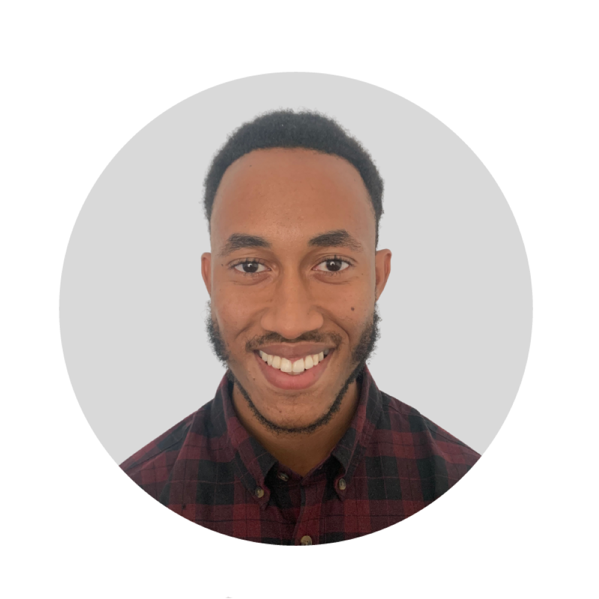

OCT 2026 — PRESENT CURRENT
Graduate AI Engineer
Fifty One Degrees
Applied AI engineering and client delivery, alongside my PhD research.
AI ENGINEERING · RESEARCH · CURIOSITY
I’m interested in how AI works,
and what we can build with it.
I’m Elie-Andre Disso, a Graduate AI Engineer at Fifty One Degrees and PhD researcher at the University of Westminster, working across machine learning, language and computer vision.

01 / SELECTED WORK
Experiments, research and
small steps towards useful systems.
02 / EXPERIENCE
OCT 2026 — PRESENT CURRENT
Fifty One Degrees
Applied AI engineering and client delivery, alongside my PhD research.
JUN — AUG 2026
NatWest Group
Worked in an intern Scrum team on an internal AI decision-support project. Translated stakeholder needs into technical decision criteria and explored engineering practices in a banking environment.
Also took part in a five-hour Microsoft low-code hackathon.
JUN — DEC 2024
The Alan Turing Institute · LLM systems
Worked on automated model evaluation, prompt optimisation and reproducible comparisons of language-model outputs.
2023 — EXPECTED 2027
University of Westminster
Researching machine learning for real-world problems, with interests in NLP, computer vision and sustainable approaches to food waste.
03 / RESEARCH
My PhD sits at the intersection of AI and real-world decision making.
I’m interested in language models, computer vision and how to evaluate systems beyond a convincing demonstration. My background in biomedical science shapes how I approach experiments, validation and uncertainty.
This space will grow with my research: write-ups, papers and the thesis when they are ready to share.
04 / THE NOTEBOOK
I’m starting to document what I learn in AI engineering. Essays, project notes and research explanations will appear here as I write them.
ALWAYS CURIOUS
For conversations about AI, research or something interesting you’re building.
elie.disso@gmail.com